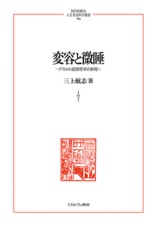

近刊専門書博論
変容と微睡——デカルト道徳哲学の射程

こんなに人間らしいデカルトを、見たことがあるだろうか――。
明晰判明、理性の人として知られるデカルトが、悲嘆におしひしがれ、心労に疲弊しているなかでも、主体が持つ身体への信頼を、道徳において語る。それは、知の探究とそれに基づく主体の変容だけではなく、生きられた層に堆積された時間の厚みのなかで、魂の平静を求め、感覚に微睡み満足することを目指す、道徳の哲学であった。本書は、これまで等閑視されがちであったデカルトの道徳哲学を、著作のみならず書簡を精緻に読解することで再構成し、これまでの定説を覆す。そう、たしかに「デカルトはそんなこと言ってない」。形而上学者でもなく、自然学者でもない、道徳哲学者デカルトの姿が、ついに描きだされる。